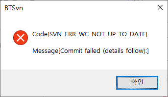
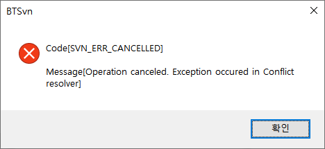
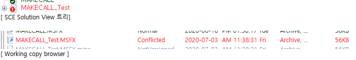

| 시나리오 형상관리 - 충돌 관리 | 시작 다음 이전 |
형상관리 중인 디렉토리나 파일의 이름 변경, 삭제 시 에 다른 사용자는 CheckOut을 다시 받아야 할 수 도 있습니다.
윈도우 탐색기에서 형상관리 중인 디렉토리, 파일을 삭제, 이름 변경 등을 하면 Repository리는 변경이 안되기 때문에 형상관리 툴 등을 통해서 처리 해야 합니다.
* 형상관리 중인 디렉토리, 파일의 삭제, 이름 변경등은 신중히 해야 하며 같은 시나리오를 개발 중인 개발자들도 해당 항목을 확인하고 처리 해야 합니다.
SCE 시나리오 형상관리에서 가장 빈번하게 발생 할 수 있는 충돌 상황 및 원인
[충돌 해결] 충돌이 발생한 시나리오 파일을 백업 후 삭제 한 다음 SVN Update 하면 저장소에 있는 최신 파일이 다운로드 된다. SCE로 충돌이 발생한 시나리오를 열고 다시 추가 하고 자 하는 부분을 편집 한다.(이때 백업한 시나리오는 SCE를 하나 더 실행하여 열고 추가한 부분의 내용을 확인 할 수 있고 또는 아이템을 복사하여 붙여넣을 수 있다.)
• 기타 원인 - 형상관리 중인 디렉토리를 SVN Delete 하고 같은 이름으로 디렉토리를 만들어 Commit 한 상태에서 다른 사람이 Update 받을 때 tree conflict 발생
해결 : 해당 디렉토리를 삭제하고 SVN Update 합니다.
• 충돌 예제 - 같은 시나리오 파일을 다른 개발자가 편집 하고 Commit 하였으나 Update 하지 않고 편집하고 Commit 하는 경우



해결 : 위와 같은 에러 발생 시 윈도우 탐색기에서 수정한 파일들을 모두 백업 후 Conflicted 된 파일을 삭제하고 SVN Update를 실행하면 저장소에 있는 파일이 다운로드 되는데 이 파일을 편집 후 커밋합니다.
|
| Copyrights(C) Bridgetec.co.kr. All Rights Reserved | 시작 다음 이전 |